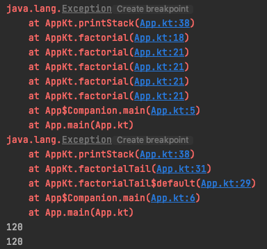
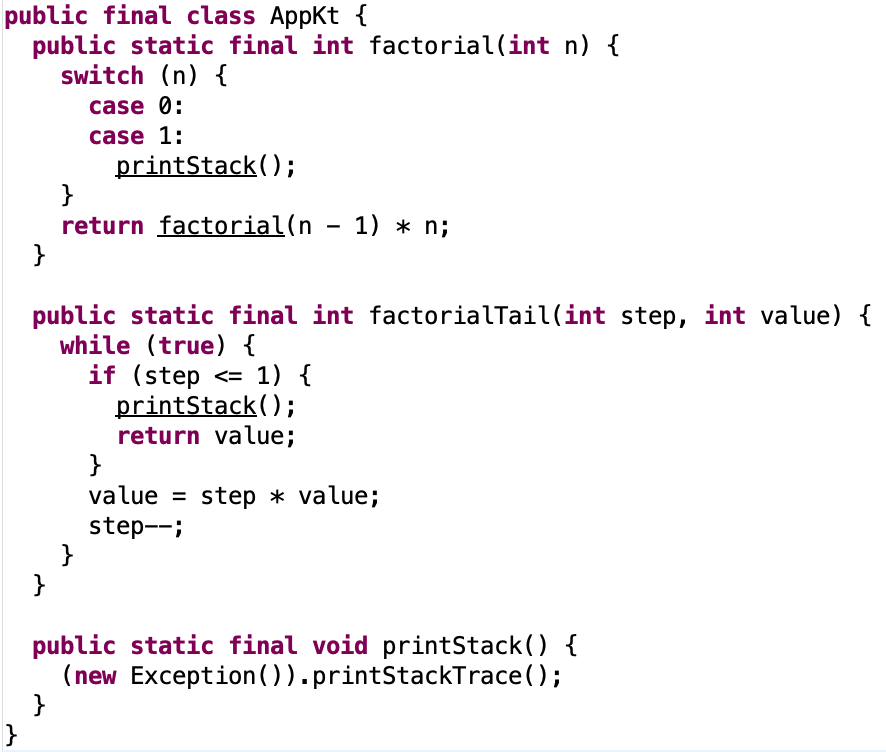
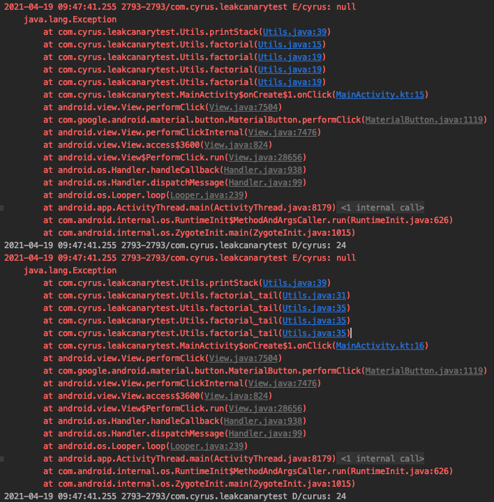

尾递归及尾递归优化
什么是尾递归
这里有一篇文章讲得很好，转载自 浅谈Java中的递归与尾递归
首先我们讲讲递归
递归的本质是，某个方法中调用了自身。本质还是调用一个方法，只是这个方法正好是自身而已，递归因为是在自身中调用自身，所以会带来以下三个显著特点：
- 调用的是同一个方法
- 因为 1，所以只需要写一个方法，就可以让你轻松调用无数次（不用一个个写，你定个 n 就能有 n 个方法），所以调用的方法数可能非常巨大
- 在自身中调用自身，是嵌套调用（栈帧无法回收，开销巨大）
因为上面 2 和 3 两个特点，所以递归调用最大的诟病就是开销巨大，栈帧和堆一起爆掉，俗称内存溢出（一个误区，不是因为调用自身而开销巨大，而是嵌套加上轻易就能无数次调用，使得递归可以很容易开销巨大），既然会导致内存泄露那肯定要想办法了，方法很简单，那就是尾递归优化
尾递归优化
尾递归优化是利用上面的第一个特点 “调用同一个方法” 来进行优化的，包括两个东西：
尾递归的形式
尾递归其实只是一种对递归的特殊写法，这种写法原本并不会带来跟递归不一样的影响，它只是写法不一样而已，写成这样不会有任何优化效果，该爆的栈和帧都还会爆；具体不一样在哪里，前面说了，递归的本质是某个方法调用了自身，尾递归这种形式就要求：某个方法调用自身这件事，一定是该方法做的 最后一件事（所以当有需要返回值的时候会是 return f(n)，没有返回的话就直接是 f(n)）
要求很简单，就一条，但是有一些常见的误区：
- 这个
f(n)外不能加其他东西，因为这就不是最后一件事了，值返回来后还要再干点其他的活，变量空间还需要保留 - 如果有返回值的，你不能：乘个常数
return 3f(n)，乘个 nreturn n*f(n)，甚至是f(n)+f(n-1)
编译器对尾递归的优化
上面说了，你光手动写成尾递归的形式，并没有什么卵用，要实现优化，还需要编译器中加入了对尾递归优化的机制，有了这个机制，编译的时候就会自动利用上面的特点一来进行优化，简单说就是重复利用同一个栈帧，不仅不用释放上一个，连下一个新的都不用开，效率非常高（有人做实验，这个比递推比迭代都要效率高）
为什么写成尾递归的形式，编译器就能优化了？
- 因为在递归调用自身的时候，这一层函数已经没有要做的事情了，虽然被递归调用的函数是在当前的函数里，但是他们之间的关系已经在传参的时候了断了，也就是这一层函数的所有变量什么的都不会再被用到了，所以当前函数虽然没有执行完，不能弹出栈，但它确实已经可以出栈了
- 正因为调用的是自身，所以需要的存储空间是一毛一样的，那干脆重新刷新这些空间给下一层利用就好了，不用销毁再另开空间
所以总结为了解决递归的开销大问题，使用尾递归优化，具体分两步：
- 你把递归调用的形式写成尾递归的形式
- 编译器碰到尾递归，自动按照某种特定的方式进行优化编译
举例：
# 没有使用尾递归的形式
def recsum(x):
if x == 1:
return x
else:
return x + recsum(x - 1)# 使用尾递归的形式）
def tailrecsum(x, running_total=0):
if x == 0:
return running_total
else:
return tailrecsum(x - 1, running_total + x)但不是所有语言的编译器都做了尾递归优化。比如 C 实现了，JAVA 没有去实现，说到这里你很容易联想到 JAVA 中的自动垃圾回收机制，同是处理内存问题的机制，尾递归优化跟垃圾回收是不是有什么关系，这是不是就是 JAVA 不实现尾递归优化的原因？
所以下面要讲一下垃圾回收（GC）
首先我们需要谈一下内存机制，这里我们需要了解内存机制的两个部分：栈和堆。下面虽然是在说 JAVA，但是 C 也是差不多的
在 Java 中， JVM 中的栈记录了线程的方法调用，每个线程拥有一个栈，在某个线程的运行过程中如果有新的方法调用，那么该线程对应的栈就会增加一个存储单元，即栈帧 (frame)。在 frame 中保存有该方法调用的参数、局部变量和返回地址；Java 的参数和局部变量只能是基本类型的变量(比如 int)，或者对象的引用(reference)，因此在栈中只保存有基本类型的变量和对象引用。而引用所指向的对象保存在堆中
然后由栈和堆的空间管理方式的不同，引出 垃圾回收 的概念，当被调用方法运行结束时，该方法对应的帧将被删除，参数和局部变量所占据的空间也随之释放，线程回到原方法继续执行，当所有的栈都清空时程序也随之运行结束
如上所述，栈(stack)可以自己照顾自己，但堆必须要小心对待。堆是 JVM 中一块可自由分配给对象的区域，当我们谈论垃圾回收 (garbage collection) 时，我们主要回收堆(heap)的空间
Java 的普通对象存活在堆中，与栈不同堆的空间不会随着方法调用结束而清空（即使它在栈上的引用已经被清空了），因此在某个方法中创建的对象，可以在方法调用结束之后继续存在于堆中，这带来的一个问题是，如果我们不断的创建新的对象，内存空间将最终消耗殆尽
如果没有垃圾回收机制的话，你就需要手动地显式分配及释放内存，如果你忘了去释放内存，那么这块内存就无法重用了（不管是什么局部变量还是其他的什么）；这块内存被占有了却没被使用，这种场景被称之为 内存泄露，所以不管是 C 还是 JAVA，最原始的情况都是需要手动释放堆中的对象，C 到现在也是这样，所以你经常需要考虑对象的生存周期，但是 JAVA 则引入了一个自动垃圾回收的机制，它能智能地释放那些被判定已经没有用的对象
现在我们就可以比较一下尾递归优化和垃圾回收了
他们最本质的区别是：尾递归优化解决的是内存溢出的问题，而垃圾回收解决的是内存泄露的问题
- 内存泄露指程序中动态分配内存给一些临时对象，但是对象不会被 GC 所回收，它始终占用内存，即被分配的对象可达但已无用
- 内存溢出指程序运行过程中无法申请到足够的内存而导致的一种错误。内存溢出通常发生于 Old 段或 Perm 段垃圾回收后，仍然无内存空间容纳新的 Java 对象的情况
从定义上可以看出内存泄露是内存溢出的一种诱因，不是唯一因素。
自动垃圾回收机制的特点是：
- 解决了所有情况下的内存泄露的问题，但还可以由于其他原因内存溢出
- 针对内存中的堆空间，正在运行的方法中的堆中的对象是不会被管理的，因为还有引用（栈帧没有被清空）
- 一般简单的自动垃圾回收机制是采用 引用计数 机制，每个对象包含一个计数器，当有新的指向该对象的引用时计数器加 1，当引用移除时计数器减 1，当计数器为 0 时认为该对象可以进行垃圾回收
与之相对，尾递归优化的特点是：
- 优化了递归调用时的内存溢出问题
- 针对内存中的堆空间和栈空间，正在运行的方法的堆和栈空间正是优化的目标
- 只在递归调用的时候使用，而且只能对于写成尾递归形式的递归进行优化
验证 Kotlin 的尾递归优化
实现阶乘，factorial 是普通的递归版本，factorialTail 是尾递归版本（Kotlin 里除了要把递归函数写成尾递归的形式，还要添加 tailrec 关键字）
当计算 5! 时，通过控制台可以看到普通的递归会有 5 个栈帧（相当于从左至右计算：1 * 2 * 3 * 4 * 5）；而尾递归则只有一个栈帧，说明 Kotlin 确实通过尾递归优化减少了递归调用时的栈帧消耗（相当于从右至左计算：5 * 4 * 3 * 2 * 1）
class App {
companion object{
@JvmStatic
fun main(args: Array<String>) {
println(factorial(n = 5))
println(factorialTail(step = 5))
}
}
}
/**
* 阶乘的普通递归版本
* 5! = 1 * 2 * 3 * 4 * 5
*/
fun factorial(n: Int): Int {
return when (n) {
0, 1 -> {
printStack()
1
}
else -> factorial(n - 1) * n
}
}
/**
* 阶乘的尾递归版本
* 添加关键字 tailrec 看看 Kotlin 会不会对其进行优化
*/
tailrec fun factorialTail(step: Int, value: Int = 1): Int {
if (step <= 1) {
printStack()
return value
}
return factorialTail(step - 1, step * value)
}
fun printStack() {
Exception().printStackTrace()
}
打开 class 文件可以看到，其实是把递归写法转换为 while 循环，从而实现「只使用一个栈帧」的目标

验证 Java 的尾递归优化
从下面的控制台输出可以看到，无论是普通递归还是尾递归都产生了四个栈帧，说明 java 编译器并未实现对尾递归的优化
/**
* 阶乘的普通递归版本
* 5! = 1 * 2 * 3 * 4 * 5
*/
public static int factorial(int n) {
switch (n) {
case 0:
case 1:
printStack();
return 1;
default:
return factorial(n - 1) * n;
}
}
/**
* 阶乘的尾递归版本
*/
public static int factorial_tail(int step, int value) {
if (step <= 1) {
printStack();
return value;
}
return factorial_tail(step - 1, step * value);
}
public static void printStack() {
Log.e("cyrus", null, new Exception());
}